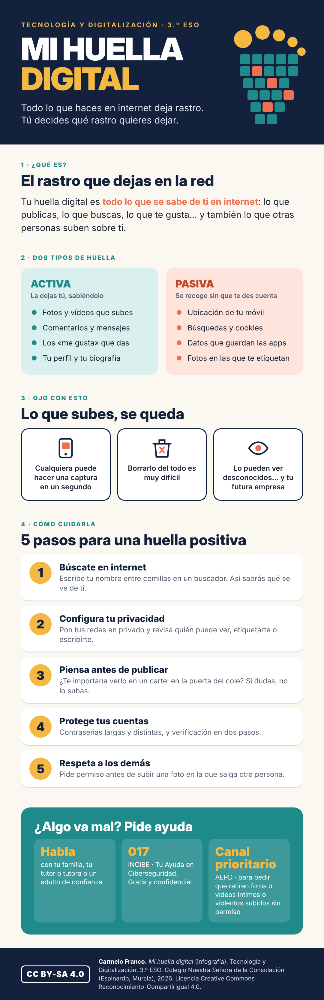

¿Qué es la huella digital?
Todo deja rastro
Cuando caminas por la playa, tus pies dejan marcas en la arena. En internet pasa lo mismo: cada vez que subes una foto, das un «me gusta», buscas algo o abres una aplicación, dejas un rastro. A ese rastro lo llamamos huella digital.
Tu huella digital es todo lo que se puede saber de ti en internet. Incluye lo que publicas tú, pero también lo que otras personas suben sobre ti, como una foto en la que te etiquetan o un comentario en el que te nombran.
Dos tipos de huella
- Huella activa. Es la que dejas tú, sabiendo que la dejas: tus fotos y vídeos, tus comentarios, tu perfil, los mensajes que mandas en un grupo o los «me gusta» que das.
- Huella pasiva. Es la que se recoge sin que te des cuenta: la ubicación de tu móvil, las páginas que visitas, las cookies que guardan tus búsquedas o los datos que recogen las aplicaciones que instalas.
¿Por qué importa?
La huella digital forma tu identidad digital, es decir, la imagen que los demás se hacen de ti al buscarte en internet. Esa imagen la pueden ver tus amigos, pero también desconocidos y, dentro de unos años, quien te entreviste para un trabajo o una beca.
La buena noticia es que la huella digital no tiene por qué ser algo malo. Si la cuidas, puede hablar bien de ti: de lo que sabes hacer, de lo que te interesa y de cómo tratas a los demás.
Piensa un momento. Si alguien que no te conoce buscara tu nombre hoy, ¿qué crees que encontraría? Apúntalo en tu cuaderno; lo usaremos en la última sesión.
